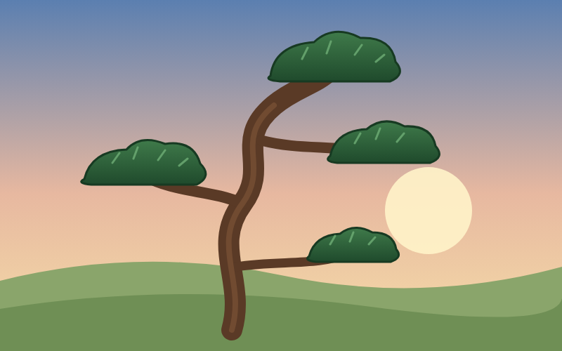

業界
松之助松太郎、「世界一の松屋」を宣言 根拠は親方の勘
牛丼の店とまちがえた電話が、早くも3件あったという。

松之助松太郎松の専門店 ・ 造園

牛丼の店とまちがえた電話が、早くも3件あったという。
到着は「潮しだい」。はしごを積み忘れたことに沖で気づいた。

次回の議題は「では松ぼっくりとは何か」に決まった。

親方は「松の店にあるのだから松ぼっくりだ」と説明している。

初日の正解率は5割。親方は「伸びしろしかない」と前向きだ。

松でない木のご相談は、お近くの造園屋さんへ。